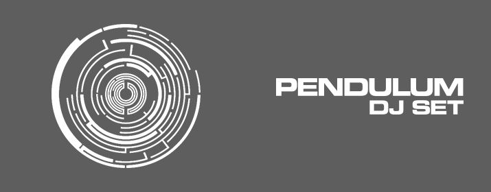

Mainstage: 22:00-23:00!
Pendulum starteten ihre Karriere 2002 als 5 köpfige australisch-britische DnB-Band,
welche aus Rob Swire, Gareth McGrillen, Paul Harding, Peredur ap Gwynedd und
Kevin Sawka bestand. 2006 trat Ben Mount Pendulum bei. Neben DJ-Sets und
Keyboards benutzten Pendulum auch traditionelle Instrumente einer Rockband, wie
Schlagzeug, E-Gitarre und E-Bass.
Gegründet wurde die Band 2002 in Australien. 2003 zog die Band nach London um.
Die Veröffentlichung ihrer Debüt-Single Vaultfand in der DnB-Szene großen
Anklang.
2005 erschien ihr erstes Album Hold your Colour.
2008 veröffentlichten Pendulum ihr zweites Album In Silico.
2010 erschien ihr drittes Studioalbum Immersion, welches in den britischen
Albumcharts von null auf eins kletterte.
2011 wurde die Single Ransomauf der offiziellen Pendulum-Website veröffentlicht,
deren Erlös den Opfern des T ōhoku-Erdbeben 2011 zugutekam.
Im selben Jahr splittete sich Pendulum - Rob Swire und Gareth McGrillen gründeten
Knife Party, Paul Harding und Ben Mount erklärten jedoch, weiterhin unter dem
Namen Pendulum Musik zu machen und auf Tour zu gehen.
Es ist eine Besonderheit, dass beide – Knife Party und Pendulum – auf einem Festival
Line Up stehen und sie beim Electric Love Festival wieder aufeinander treffen.